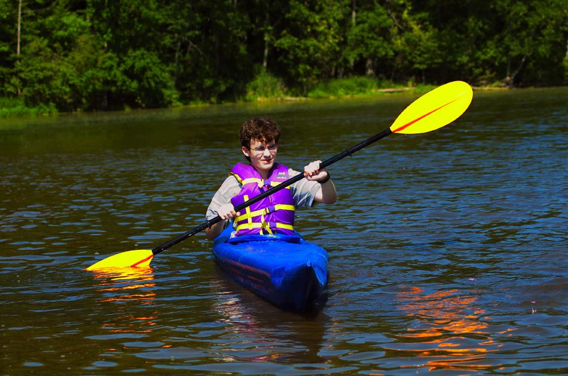

| Sonnet 16 by Ben Matthews (US) | Menu Last Page Next Page |
|

Ben, from New York, has just completed a Sonnet 16. His comments...."Overall an excellent boat even compared to non-folders. I expect it will be great both for college and backpacking trips." Ben will be keeping the Sonnet 16 in his dorm room at college this fall. He has also constructed a Wee Lassie 2 cedar strip canoe.
|
|